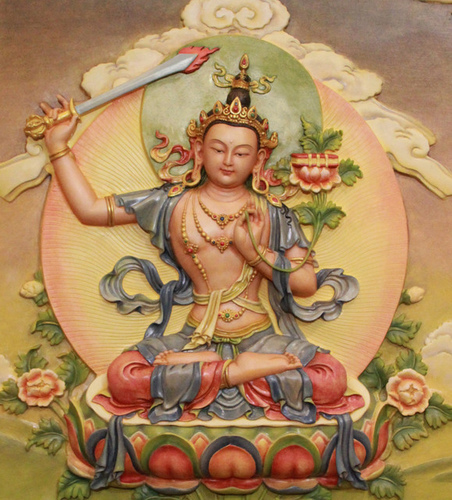
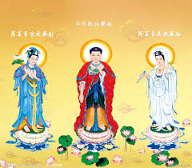

五，大勢至菩萨.......職責
在上一集里，西洋女王的曲令，首句是：摩诃我本大。此摩诃二字，读者已经知道，是梵语，
意为虚空。整个宇宙可以说由两部分组成，其一是宙心，其二是环绕宙心漫无边际的虚空。

宙心之王是大日如来，亦称为大智慧王。佛字的含意就是大智慧，故，又称之为佛王。此佛王就是文殊师利。
宙心之外，称之为虚空界，虚空界又分为三界内和三界外。区分内外的标准是七级能量。七级能量以下，称之为三界内；七级能量至九级能量称之为三界外；九级能量至十二级能量称之为宙心。宙心又称之为大日宫。
三界内、外总称为虚空界，梵语为摩诃。西洋女王就是摩诃王。她的使命就是巡游虚空界，把从宙心流出的生命光团，回收于宙心。
这种回收，在宗教界称之为渡，即引渡。
令摩诃王最头痛的就是玄龙，千百万年来、玄龙一直在和摩诃王作对，摩诃王搞引渡，玄龙就反渡。引渡和反渡就是第一、二次天地大战的起因。
在人类社会，最忠于摩诃王的，就是西方的天主教和基督教。他们的末日审判的理论，连他们的大教主也说不清是怎么回事。
这个末日审判，实际是指831万年之后的，银河天体大爆炸。在那时，能量具足的，冲出三界走了，能量不具足的，与银河系同归于尽，成为永恒的死灵体，即能量为负12级。问题是这种死灵体仍然有知觉，如果无知觉就无痛苦而言了。
基督教和天主教的原始使命，就是毁灭地球上的一切生灵，而回归三界外。毁灭的方式，就是发动大规模的战争，和制造大规模杀伤武器。
但是，现代基督教和天主教，对原始使命已经淡漠了，已经变得留恋人生了。
东方教与西方教的原始区别在于，九天玄女主张，不要采取自我毁灭的方式回归，既然已经来到地球上了，即来之，则安之，先生存下去，在生存的保障下，通过修炼而回归。
回归的目的是一致的，但回归的方式方法不同。故，历代称西洋女王为战争女神，称九天玄女
为正义女神。为什么称之为正义，是因为她态度明朗，坚决支持玄龙为保存地球生灵的反渡战争。这里无所谓正义和非正义，无所谓是与非，仅仅是方法上的区别，目的是一致的，都是回归。
宇宙的法则，无是无非。立点在宙心，如果你是站在宙心的角度去看宇宙，那就是：无是无非。
根据这个宇宙法则，就可以判别任何一个市俗宗教，市俗气功门派所相应的真实层次的高低。
首先，任何宗教，气功门派，禁忌越多，说明它相应的层次越低。凡有任何禁忌的宗教式气功门派，它所真实相应的层次，均在七级能量以下。
无任何禁忌，相应关系才在七级以上。
无任何禁忌，但有宗教或门派区别的，相应层次为7—8级能量区。
无任何宗派分别心才可相应9—12级能量区。
故，读者可根据这个原理，去识别、判别任何一个市俗宗教及气功门派的相应关系及真实层次。

西洋女王就是佛门中所讲的西方三圣之一，即大势至，她具足十一级能量，威势极大。能摧毁任何天魔地怪。她的金发女西洋战团，号称常胜军。金发女战团，亦称之为金毛狮子战团。这个战团就是宙心大日宫的主力兵团。是一支跨时空界的国际宪兵。
西洋女王是佛王的二姐，佛王的大姐就是观世音。观世音在西洋，被称之为西洋圣母。在中东被称之为真主。在中国西藏，被称之为西藏人的祖先。
所谓西方三圣，实际只是观音和大势至两个人，而阿弥陀佛实际是不存在的，他仅仅是观音为渡人方便而幻化的，以适应东方人的大男子主义的心态。
相比之下，东方种族的先祖、先尊，西王圣母和九天玄女，她们的力量就要弱小一些。
市俗基督教和天主教的渗入，佛教的渗入，实质是西东双方天地大战的延续。理论是，要帮助中华人从大地回归天界。
西王圣母的曲令中有一语：造化弄人……
西洋女王为渡东方人也是鏖战千百万年，白发三千丈，用心良苦，损兵折将一百多万众。
那么，西洋女王为什么不肯一箭射掉玄龙？
大日有话：要活的……。
这就是娇芳娘手里的那块神秘美玉的隐秘。
| 上 一 頁 | 下 一 頁 | 回 主 頁 |
Email: miduoyuan@126.com